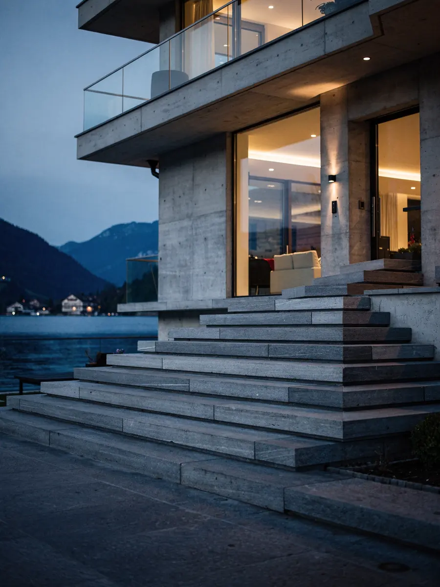

Umzug von Villen, grossen Häusern und Anwesen
ZÜGELKLAR plant den Umzug Ihrer Villa oder Ihres Anwesens Raum für Raum – mit Besichtigung, schriftlichem Ablaufplan und einem festen Ansprechpartner, der das Projekt vom ersten Rundgang bis zur Übergabe begleitet.

SymbolbildEin grosses Haus braucht einen Plan
Viele Zimmer, Keller, Estrich, Nebengebäude und Garten: Bei einer grossen Liegenschaft entscheidet die Vorbereitung über den Verlauf. Bei der Besichtigung nehmen wir Raum für Raum auf, was mitkommt, was eingelagert, verkauft oder entsorgt wird und welche Stücke besondere Aufmerksamkeit brauchen.
Diese Aufnahme ist die Grundlage für den Ablaufplan, oft über mehrere Tage. Kartons und Möbel werden nach Zielraum etikettiert, damit am neuen Ort jedes Stück direkt an seinen Platz kommt. Auf Wunsch arbeiten wir in Etappen, etwa wenn ein Teil des Hauses bis zuletzt bewohnt bleibt.
Gerade bei grossen Häusern lohnt es sich, früh zu entscheiden, was nicht mitkommt. Räume, die vorab geleert werden, verkürzen die eigentlichen Umzugstage und schaffen Platz für das Verpacken der empfindlichen Stücke.
- Besichtigung und Aufnahme vor Ort
- Inventarliste und Etikettierung nach Zielraum
- Mehrtägige Planung oder Etappen nach Vereinbarung
- Ein Ansprechpartner für das ganze Projekt
Wertvolle Möbel, Antiquitäten und Kunst im Haushalt
Antike Kommoden, Vitrinen, Spiegel, Lüster oder Gemälde verlangen mehr als eine Umzugsdecke. Empfindliche Stücke verpacken wir nach Absprache nach Mass, mit passendem Schutzmaterial und Kantenschutz. Nennen Sie uns diese Objekte früh, damit wir Material und Personal passend planen.
Bargeld, Schmuck, Wertpapiere und wichtige Dokumente transportieren Sie am besten selbst, sofern nichts anderes schriftlich vereinbart ist. Für besonders wertvolle Kunstwerke klären wir allfällige Zusatzanforderungen individuell in der Offerte.
Grosse Möbel wie Schränke, Bettgestelle oder Esstische bauen wir ab und am neuen Ort wieder auf, soweit dies mit üblichem Werkzeug fachgerecht möglich ist. Bei Spezialmöbeln oder Einbauten klären wir vorab, ob eine Fachperson beigezogen werden sollte.
Weinkeller, Garten und schwere Einzelstücke
Ein Weinkeller wird vor dem Transport erfasst und in stabilen Kisten verpackt; die Ordnung lässt sich mit einer Liste am neuen Ort wiederherstellen. Bei grossen oder besonders wertvollen Sammlungen besprechen wir den passenden Zeitpunkt und allfällige besondere Anforderungen vorab.
Gartenmöbel, Pflanzgefässe und Skulpturen sind oft schwer und unhandlich. Gewicht, Untergrund und Weg zum Fahrzeug klären wir bei der Besichtigung. Wo Treppen oder Gelände es verlangen, klären wir vorab, ob ein Möbellift oder Kran nötig ist.
Pflanzen in grossen Töpfen, Brunnenelemente oder Gartenhäuser besprechen wir einzeln. Was fest verbaut ist oder Anschlüsse an Wasser oder Strom hat, gehört nicht zu unserem Auftrag; hier lohnt sich der Beizug einer Fachperson.
Tresore und andere sehr schwere Einzelstücke müssen vor Vertragsabschluss angegeben werden, damit wir Personal und Hilfsmittel passend planen können.
Zufahrt, Grundstück und Schutz der Liegenschaft
Lange Einfahrten, Tore, Kieswege oder eine enge Strasse vor dem Haus gehören zur Planung. Wir prüfen, wo das Fahrzeug stehen kann, und organisieren auf Wunsch ein Halteverbot; die Gebühren der Gemeinde werden separat ausgewiesen.
Im Haus schützen wir Böden, Treppen, Geländer und Türrahmen, bevor das erste Möbel bewegt wird. Bei historischen Liegenschaften mit empfindlichen Oberflächen, engen Treppen oder Auflagen der Eigentümerschaft stimmen wir das Vorgehen vorab mit Ihnen und allenfalls mit der Verwaltung ab.
Auch am neuen Ort prüfen wir Zufahrt und Wege im Voraus, damit grosse Möbel nicht erst am Umzugstag an einer Türe oder einem Treppenabsatz scheitern.
Diskretion, Räumung und Reinigung
Adressen, Inventar und Abläufe behandeln wir vertraulich. Fotos im Haus dienen ausschliesslich der Planung und entstehen nur mit Ihrem Einverständnis.
Nach dem Auszug übernehmen wir auf Wunsch die Räumung, die fachgerechte Entsorgung und die Umzugsreinigung mit Abnahmegarantie – im selben Auftrag und mit demselben Ansprechpartner.
Wird die bisherige Liegenschaft verkauft, stimmen wir Räumung und Reinigung auf den Übergabetermin mit der neuen Eigentümerschaft ab.
Auf Wunsch übernehmen wir auch das Ein- und Auspacken ganzer Bereiche wie Bibliothek, Küche oder Ankleide. So können Sie sich auf die Entscheidungen konzentrieren, die nur Sie treffen können.
Häufige Fragen
Können Sie einen Weinkeller mitzügeln?
Ja. Die Flaschen werden erfasst, in stabilen Kisten verpackt und am neuen Ort nach Liste eingeräumt. Besondere Anforderungen bei wertvollen Sammlungen klären wir vorab in der Offerte.
Was gilt, wenn das Grundstück nur über einen schmalen Weg erreichbar ist?
Das klären wir bei der Besichtigung. Je nach Situation planen wir ein kleineres Fahrzeug oder zusätzliches Personal für den Trageweg ein und klären, ob ein Möbellift nötig ist. Der Mehraufwand steht in der Offerte.
Müssen wir während des ganzen Umzugs vor Ort sein?
Nicht zwingend. Wichtig ist, dass Sie oder eine entscheidungsbefugte Vertretung erreichbar sind und der Zugang geregelt ist. Wie Sie informiert werden, vereinbaren wir mit Ihnen.